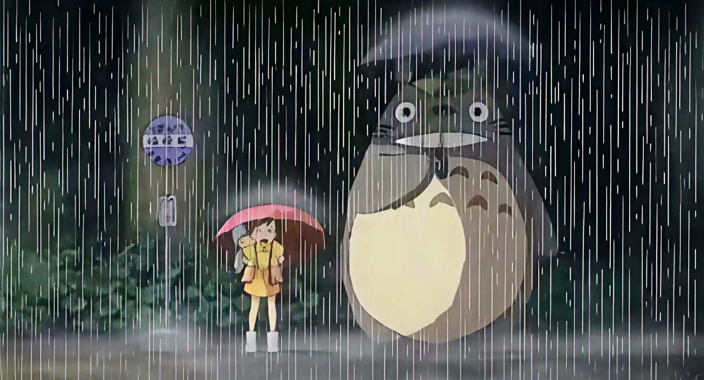
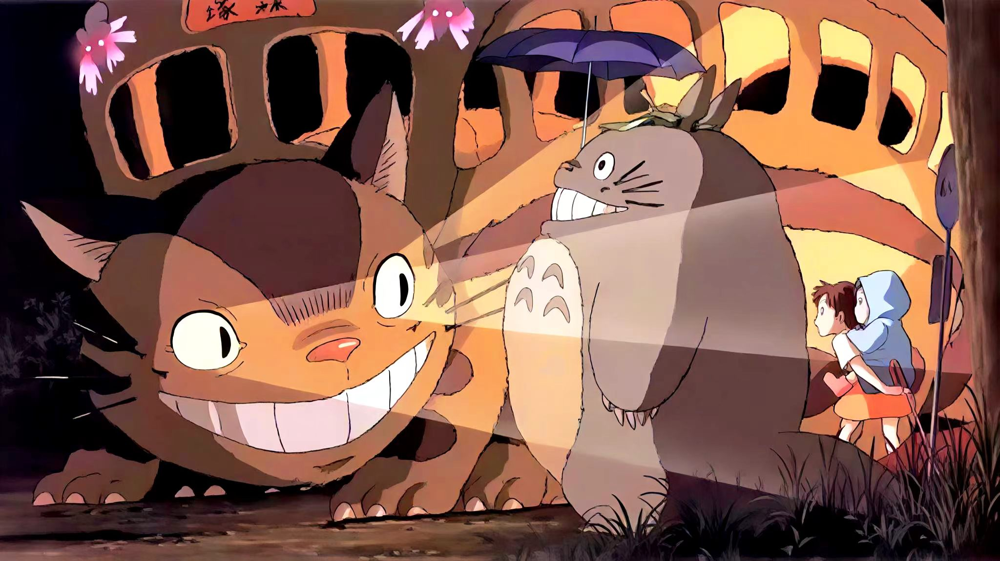
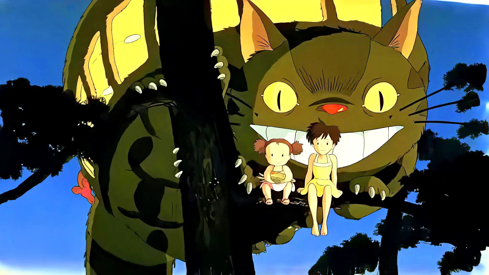

剧情故事
昭和时代，为了方便母亲疗养养病，小月与小梅姐妹跟随父亲搬到乡下一栋老旧的乡间老屋。房子年久失修，布满灰尘与藤蔓，当地人称它为“鬼屋”，但姐妹俩丝毫没有害怕，反而对充满野趣的乡村生活充满好奇。屋子角落藏着成群的煤煤虫，风吹过木质房梁会发出奇怪声响，在大人眼中诡异的一切，在孩子眼里全是新奇的秘密。

某天小梅独自在后山玩耍，追逐闪光的小生灵时，意外撞见一只灰色巨大龙猫。小梅追着龙猫钻进茂密樟树的树洞，见到正在熟睡的森林守护神大龙猫，她爬到龙猫身上打闹，可龙猫始终温柔沉睡。小梅兴奋地跑回家告诉姐姐小月，可小月前去寻找时，龙猫早已消失，只留下巨大脚印，父亲告诉姐妹：心存童真的孩子，才能看见森林里的神明。

一个雨夜，姐妹俩在公交站牌等待下班回家的父亲，大雨滂沱。巨大龙猫撑着樟树叶子雨伞静静站在一旁，小月鼓起勇气把伞分给龙猫。作为回报，龙猫送给她们一包樟树种子，当晚种子在月光下发芽长大，龙猫带着两姐妹在树梢飞翔，俯瞰整片宁静乡村，这是独属于孩童的奇幻梦境。

医院传来母亲病情加重的消息，年幼的小梅担心母亲，独自带着玉米前往医院，却在陌生山路迷路。小月焦急万分，跑遍田野村庄都找不到妹妹，绝望之下跑到樟树大树下祈求龙猫帮忙。龙猫唤来传说中的猫巴士，巨大的猫咪列车穿梭在田野夜空，带着小月快速找到走失的小梅。

猫巴士带着姐妹来到医院窗外，两人隔着玻璃窗看见平安休养的母亲，放下带来的玉米后悄悄离开。故事没有跌宕的结局，母亲顺利康复，姐妹继续在乡间无忧无虑生活。龙猫依旧藏在森林深处，只留给保有纯粹童心的孩子相遇的机会，诉说人与自然温柔共存的美好。
